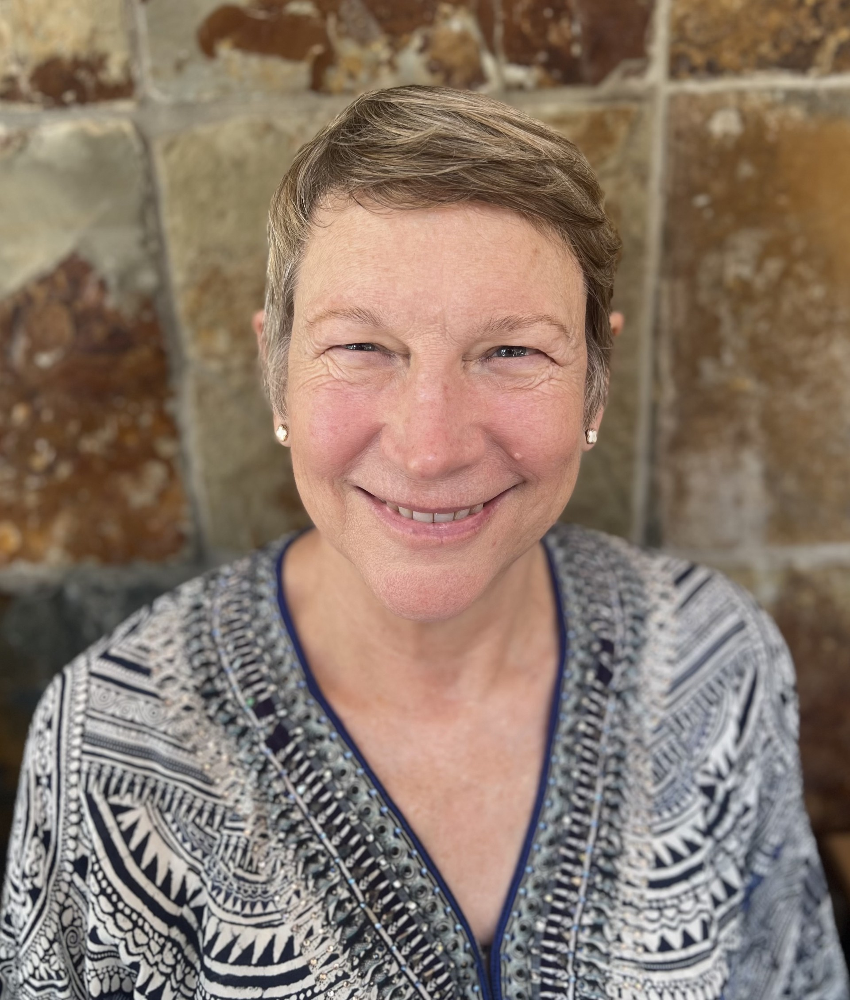
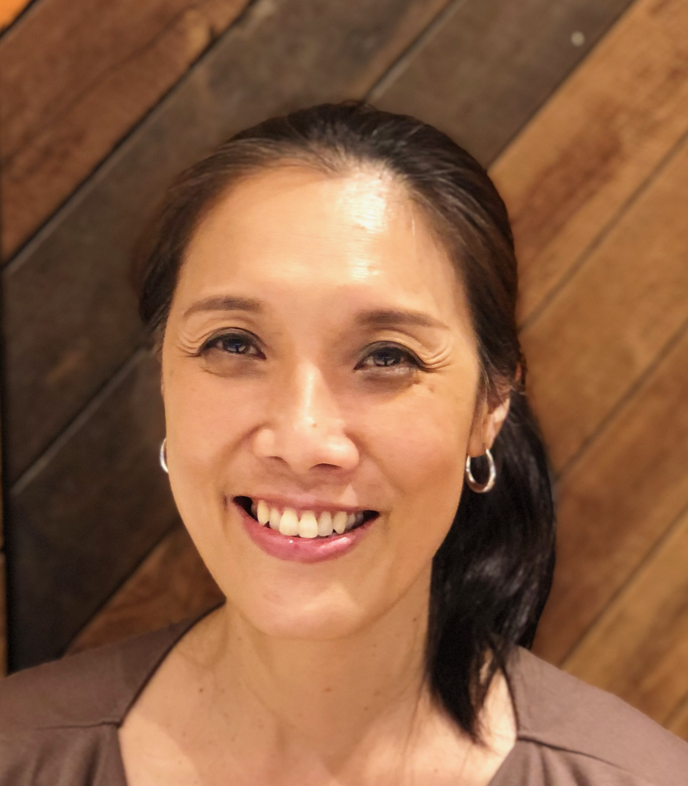

Chun Cheung - Vice-Chair of the Board /
Management Consultant
MSc(Hons) Post Graduate Dip In Corporate Management BEconomics(Hons)
Experience includes senior roles in:
Professional areas:
Management consulting, business unit management,
strategy development, large program delivery and transformation
Roles:
Management consultant, business unit head (300+ head count),
large program / transformation leadership (>$150m)
Industry sectors:
Not-for-profit and charities, banking, service providers,
software development, telecommunications, public services
Special interest:
"Start-up" and "turn-around" situation leadership

Henry Chung - Treasurer of the Board / Management Consultant
BSc(Hons) CEng CITP MBCS
Experience includes senior roles in:
- 35 years IT solution engineering experience in banking industry
- 19 years in managerial positions, experienced in stakeholder management and vendor management
- Strong leadership capability in delivering project and business outcomes
- In-depth working experience across system development and production support
- Other industry experience include food and hospitality services
Tony Eid - General Board Member
BSc (Computer Science) Executive MBA
Experience includes senior roles in:
- 28 years of experience in banking, wealth management, finance and technology industries
- 20 years of senior management experience in various sized companies including large multinationals, in capacities of Technology Chief Operating Officer, Head of Technology, Program Director and Consultant
- Experienced in strategy development, global program management, business management, vendor management and business consulting

Helen Hughes - Secretary of the Board / Management Consultant
Master of Project Management BA
Experience includes senior roles in:
- 30 years of experience in retailing banking / finance / technology industries
- 15 years experience in leading projects in one of the big four banks in Australia
- Special interest in leading projects that traverse different companies, countries and team members’ cultures
- In-depth working experience across the banking value chain including channel/distribution, products , back office operations, program delivery and IT development
Poh Lai - Management Consultant
BA
Experience includes senior roles in:
Professional areas:
Technology, consumer (retail) banking, call centre operations, project management
Roles:
Project director consumer banking, line 1 risk manager IT cloud services, senior manager IT sourcing services,
senior manager IT governance, senior project manager in various large scale programs in outsourcing and rebranding
Industry sectors:
Banking

Peter Pearson - Management Consultant
MEngSc BE(Hons) BSc DipFinMangt DipBusMangt MIEAust CPEng(ret) CPA(ret) MACS Snr(ret)
Experience includes senior roles in:
Professional areas:
IT, consulting, business management,
program management, engineering
Roles:
CIO, program director, head of consulting, professional engineer,
management of large (100+) IT departments and software development groups
Industry sectors:
Banking, insurance, software house development, telecommunications, engineering

Anand Pradhan - Management Consultant
BE (Electronics & Telecommunications), PMI Certified (2001-2009), ACS certification, IEEE (Snr Member 1991- 2012)
Experience includes senior roles in:
Professional areas:
IT, consulting, business management,
program and project management
Roles:
Consulting System Engineer, Business Development Executive,
Program and Project Director across multi country deployments
Industry sectors:
Pharmaceuticals, Banking, Insurance, Utilities, Local and State Government

Mukund Shah - Management Consultant
MBusinessManagement PostgradDip ComputerScience BElectricalEngineering
Experience includes senior roles in:
- 30 years of experience in retailing banking, insurance & technology industries
- Experienced across the banking value chain including channel/distribution, products, back office operations, program delivery and IT development
- Experienced in leading change programs involving mobile/browser technologies and integration with multiple legacy business applications

Trina Sun - General Board Member / Management Consultant
BEcon CPA
Experience includes senior roles in:
Professional areas:
Business management, program management, transformation
Roles:
Project executive, business transformation leader,
program manager, finance and operations leader, financial systems business leader
Industry sectors:
Banking, telecommunications

Eric Yeung - Chair of the Board / Management Consultant
BSc(Eng) MBA
Experience includes senior roles in:
- 40 years of experience in retailing banking, finance and technology industries
- 20 years of senior program management and line management experience in one of the big four banks in Australia, in the capacities of Divisional CIO, Head of Technology and Program Director
- Experienced in strategy development and execution, running technology as a service, sourcing strategy and vendor management